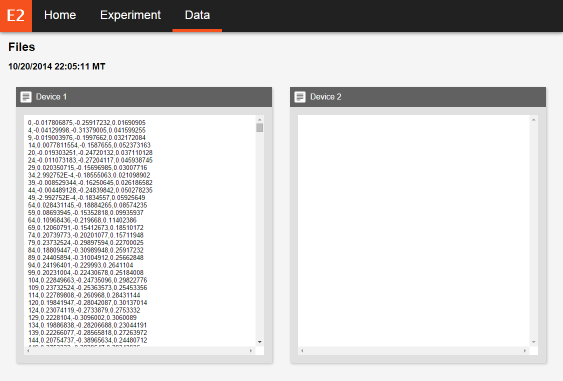

Instructions
Welcome to the Home page
This is the web browser client for PsyGlass. This website is meant to be used in conjunction with PsyGlass Glassware installed in one or more Google Glass devices. The goal of this website is to allow you to change the color and text on the display of a user's device during a session, while the device collects data from its sensors.
You are currently on the Home page of the website. Use this page to familiarize yourself with the functions of the website, such as creating and guiding a session or viewing the data collected during a session.
Running a session
Clicking on the Experiment tab on the navigation bar will take you to a page where you will be able to create and manage a session.
In addition to the website navigation bar, the Experiment page consists of two main
elements: the card space and the status bar.
The card space shows two cards, which represent the states of two devices.
A card will be attached to a device when it connects and will show you information about
the device, such as its status and ping.
The status bar shows the state of the session and contains the button through which you
will change the state of the session.
A session is dependent on four states:
- Disconnected - The client is not connected to the server
- Starting - The server is accepting connections from devices
- Running - The server is pushing device display updates to connected devices
- Finishing - The server is awaiting a disconnect instruction
The session starts at the Disconnected state.
The log will say "Disconnected from server".
The session button will say "Connect to Server".
Clicking the session button will move the session to the Starting state.
The log will say "Waiting for devices...".
The session button will say "Start Session", but will not be clickable.
Once a device connects, the card attached to that device will become active.
The card's status will say "Connected" and the ping will begin to change.
The session button will become clickable.
Clicking the session button will move the session to the Running state.
The log will say "Session is in progress".
The session button will say "End Session".
You can modify the text and background color of a card and click "Send Update" to
push the changes to the attached device.
Sending an update will change the card status to "Sending update..."
and freeze the card.
Once the client receives a response from the device, the card will be unfrozen.
Clicking the session button will move the session to the Finishing state.
The log will say "Session has ended".
The session button will say "Disconnect from Server".
Clicking the session button will move the session to the Disconnected state.
Viewing session data
The third tab on the navigation bar is the Data tab. It will take you to a page where you will be able to view the data collected on a device during the latest session.
In addition to the website navigation bar, the Data page consists of two main elements:
the session timestamp field and the file space.
If there is session data stored on the server, the session timestamp field will show the
date and time of when the latest session was conducted.
If there is session data stored on the server, the available data from one or more devices
will be shown in the file space.
In order to copy the data to your clipboard, you must manually highlight all rows of data, right click the highlighted area, and click Copy. You can alternatively highlight and Ctrl+C.
Things to consider
PsyGlass is an open-source project with . With this in mind, there are some things you should know:
-
Try not to leave the Experiment page if you're connected to the server
When you connect to the server, the server creates a new session in memory. If you leave the page before clicking the disconnect button, the server is not notified, and therefore will assume the session is still active. Rejoining the server will clear the previous session and create a new one in its place. Any devices connected to the previous session will throw an error and disconnect.
-
The ping on a card is an approximation
The ping shown on a card is an approximation of how well connected the client is to the attached device. The general rule of thumb is that a very low ping represents a good connection while a high ping represents a bad connection.
-
But the ping can tell you something else
The client and server cannot determine when a device disconnects mid-session. However, you can use the ping of the corresponding card to determine this yourself. If the ping continuously increases, then the device has been disconnected.
-
The server does not tell the device to automatically upload its data
After you end a session, make sure you or the device user manually navigates to the Upload section of the PsyGlass Glassware. Give the device time to upload the data. Additionally, give the server some time to save the data to memory. This process may take seconds to minutes depending on the amount of data collected.
Credits
Created by Kevin Rodriguez, Alexandra Paxton, and Rick Dale. For more, see Paxton, Rodriguez, & Dale (submitted).